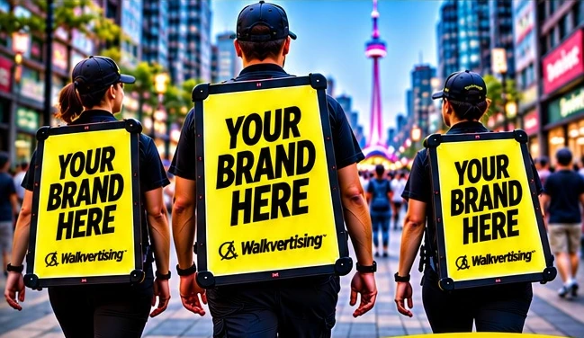

FrequentlyAsked Questions
Find quick answers about services, bookings, artwork and reporting for walking billboard campaigns.

Booking & Scheduling
How do I book a Walkvertising campaign?
Request a campaign quote with your preferred dates, locations and goals. Our team will follow up with availability and a campaign plan.
How far in advance should I book?
Share your dates as early as possible so there is time to confirm staffing, routes and artwork. If your dates are coming up soon, ask us about available options.
Can I make changes to my booking?
Contact us with the changes as soon as you know about them. Adjustments depend on availability and the stage of production.
What is the minimum campaign duration?
We offer single-day campaigns. The length of each shift and the number of ambassadors are planned around your activation.
Our Services
What is Walkvertising?
Walkvertising runs street-level advertising campaigns using illuminated billboards carried by trained ambassadors.
How does a walking billboard campaign work?
We plan a route, schedule and artwork with you. Our ambassadors then carry the displays at the agreed locations and times.
What types of campaigns do you offer?
Popular options include retail openings, restaurant promotions, trade shows, festivals, corporate events and evening campaigns.
Locations & Coverage
Where do you run campaigns?
We cover Toronto and surrounding markets including Mississauga, Brampton, Vaughan, Hamilton, Oakville, Burlington and Kitchener. Explore the service area.
Can you cover multiple locations in the GTA?
Yes. Tell us which locations matter most, and we can plan a route or coordinate teams across multiple sites.
Do you offer campaigns outside of Toronto?
Yes. We cover the GTA and select Ontario markets. Get in touch about the area you are considering.
Artwork & Production
What are the artwork requirements?
Use a clear headline, high-contrast artwork and high-resolution logos. Read the artwork guide and request the final production template before exporting.
Do you offer design or artwork assistance?
Artwork assistance can be discussed when we prepare your quote. Please share any brand guidelines, logos or existing campaign artwork.
Can I change my artwork during a campaign?
Let us know what you’d like to change. Replacement timing depends on production lead time and the campaign schedule.
Reporting & Documentation
Do you provide photos of the campaign in action?
Campaign photography can be included. Let us know which moments or locations you want documented when you request the quote.
Will I receive a campaign recap?
A recap can be included in your campaign scope. We’ll confirm what the recap covers during planning.
For Agencies & Partners
Do you work with advertising agencies?
Yes. See Agency Partnerships for planning, campaign execution and supporting materials.
Can you run white-label (unbranded) campaigns?
White-label execution is available by arrangement. Tell us about branding, communication and reporting requirements in your proposal request.
Can you coordinate large or multi-location campaigns?
We can plan staffing and routes across multiple locations. Include the scope and dates in your brief so we can confirm availability.
General Questions
What is included in the campaign?
Your quote specifies campaign duration, staffing, locations, artwork production and any documentation included.
What happens in case of bad weather?
We monitor conditions and coordinate with you if weather affects the schedule or route. Confirm the options for your campaign when booking.
How do I get a quote?
Use the quote form to share your goals, dates and locations, or email info@walkvertising.ca.
Ready to launcha campaign?
Get a customized quote for your next advertising campaign.
Get a Quote